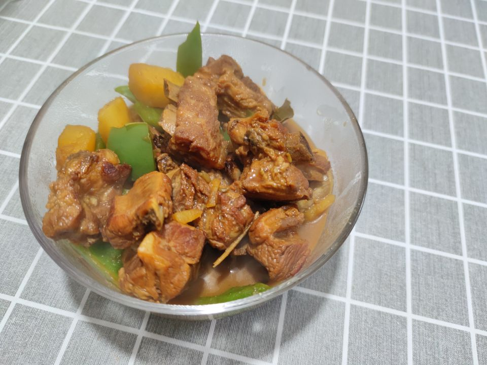
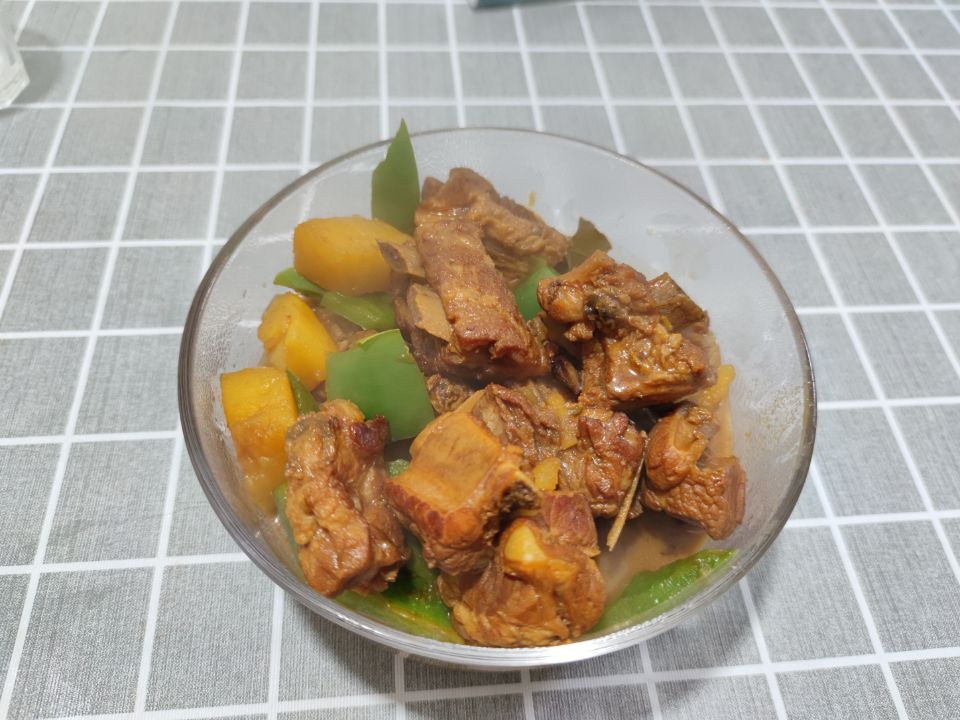

土豆炖排骨的做法
预估烹饪难度：★★★
必备原料和工具
- 肋排
- 土豆
- 姜
- 小葱
- 料酒
- 白糖
- 干辣椒
- 八角
- 花椒
- 桂皮
- 生抽
- 老抽
- 蚝油
- 黄豆酱
计算
- 肋排 = 750g
- 土豆 = 300g
- 姜 = 30g
- 小葱 = 25g
- 料酒 = 25g
- 白糖 = 10g
- 干辣椒 = 5g
- 八角 = 5g
- 花椒 = 5g
- 桂皮 = 5g
- 生抽 = 10g
- 老抽 = 5g
- 蚝油 = 5g
- 黄豆酱 = 5g
操作
- 土豆两个滚刀切片，姜片切片
- 排骨 750g 冷水下锅，加入姜片、葱段、料酒焯水 2 分钟，焯干水后捞出清洗干净（一定要用热水，不能用冷水）
- 热锅凉油，将白糖倒入锅中，翻炒至融化为焦糖色
- 加入排骨煎至两面金黄，让排骨裹满焦糖
- 加入干辣椒、八角、花椒、桂皮、姜片（建议买超市的香料包）、10ml 生抽、5ml 老抽、5ml 料酒、5ml 蚝油、5ml 黄豆酱
- 大火翻炒均匀后加入 700ml 开水，大火烧开后转小火焖煮 1 小时
- 最后加入土豆煮 10 分钟就可以出锅啦（喜欢吃青红椒的也可以按自己喜好加入）
 
附加内容
这道菜难度系数简单，对新手友好，超级下饭
如果您遵循本指南的制作流程而发现有问题或可以改进的流程，请提出 Issue 或 Pull request 。